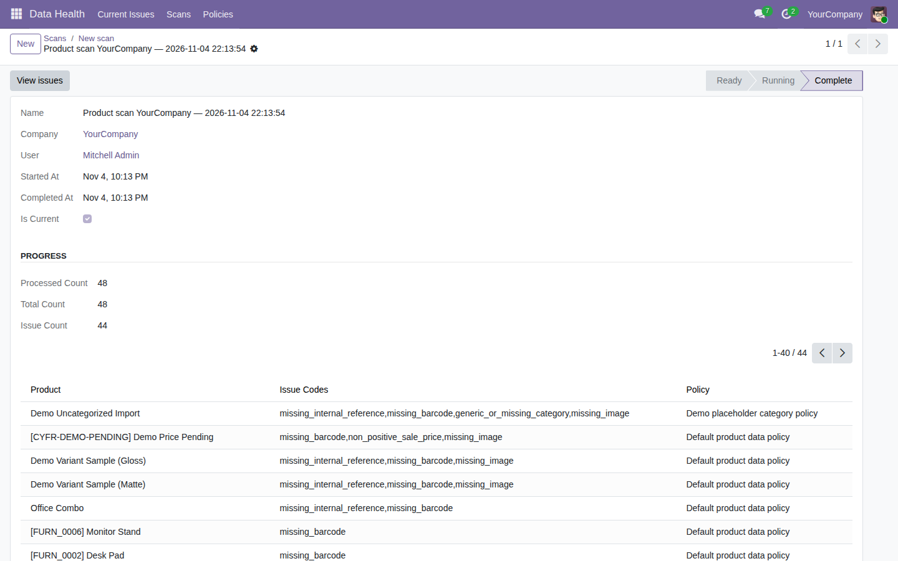

Find missing identifiers, non-positive prices, placeholder categories, and images in your Odoo product catalog.
Free, open-source Odoo 19 addon (LGPL-3). Requires the standard product module.
Open Data Health → Scans, run a scan, and review Current Issues.

Tested on Odoo 19 Community. Enterprise compatibility, a concurrent-scan stress test, and SQL query counts remain unverified.